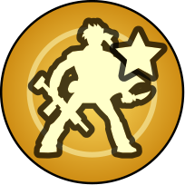
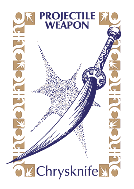
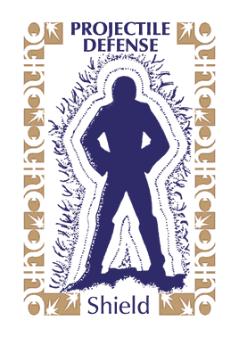
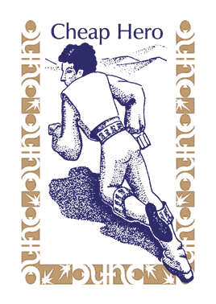
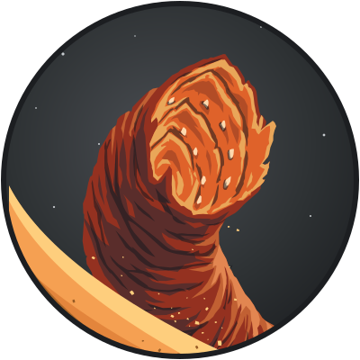
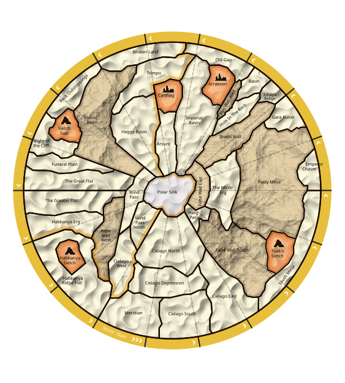

Atreides offers to share prescience for 1 until next bidding round
The map is the one part of the current interface that was designed rather than defaulted. This document extends its materials, ink, sand, gold, and a little stronghold orange, to every panel, button, and line of text around it. Game flow is untouched. Only the surface changes.
 Bene Gesserityou
Bene Gesserityou
 Fremenbot
AtreidesAlice
0:07
Fremenbot
AtreidesAlice
0:07
Chrome is dark, warm, and quiet so the parchment map is the brightest thing on screen. Nothing else may be lighter than the map except the one card that asks you to act.
Three materials, taken from the map. Solid ink for surfaces, sand for text, gold for the one thing you should press. No gradients, no textures behind panels. Faction colour is identity, never decoration.
Twelve sigils are a memory test. A sigil is always paired with its faction name and, where it matters, the player's name.
At any moment the screen has at most one parchment card. It says what is being asked, who is being waited for, and how long is left. Everything optional sits below it, darker.
Numbers are typed or picked from quick values. No control should need ten clicks to reach ten.
Every value is sampled from map.svg, sand.jpg, or DefaultSkin.cs. The current interface uses Bootswatch Darkly, whose neutral greys and link blue have no relationship to the board. They go.
| Role | Token | Rule |
|---|---|---|
| Page background | Ink, solid | No texture and no gradient. The map is the only textured thing on the page. |
| Panel | Ink 2, solid, 1px white hairline at 9% | All panels share this. Opaque, so nothing shows through. Raised elements step up to Ink 3. |
| Must act | Parchment, solid, gold rule on the left | The only light surface off the map, and the only place a gold border appears. One per screen. |
| Waiting | Ink 2, rock text, pulsing gold dot | Same shape as the act card so the eye stays in one place. |
| Primary text | Parchment on ink, 13:1 | Body copy and values. |
| Secondary text | Rock on ink, 6.5:1 | Labels, timestamps, hints. |
| Primary action | Gold fill, ink text | One per card. Never blue. |
| Timer under 10s | Storm | The only time red text appears outside the storm overlay. |
Three fonts already ship with the client. Today they appear only inside the SVG map at ten pixels. They become the voice of the whole interface, with one new body face for reading.
| Step | Size | Font | Use |
|---|---|---|---|
| Display | 44 / 30 | Advokat | Turn counter, victory, battle result |
| Title | 24 | Advokat | Prompt title, modal title |
| Panel | 18 | Advokat | Panel headers, log headers |
| Body | 16–17 | Alegreya Sans | Everything you read |
| Small | 14–15 | Alegreya Sans | Log entries, meta, chips |
| Label | 11–12, tracked .14em, caps | Copperplate | Eyebrows and field labels |
loud-vs-quiet.html: surfaces are flat and opaque, borders are neutral, buttons are a single fill. The display font stays on panel headers and the full set of text tones stays. Everything below follows that.A 4px grid. Panels pad 14. Cards pad 16–18. Gaps between siblings are 12; between sections 24. Nothing is Bootstrap's 1rem.
Tokens, leaders, and sigils are circles because they are on the board. Everything else is near-square: 3px on small things, 6px on panels and buttons, a pill only on chips and badges.
Surfaces are solid and separated by value: page, panel, raised. Borders are neutral white hairlines at 9%, never gold. Shadows are ink and appear only under things that float: modals, popovers, toasts, the phone sheet. Gold is reserved for the primary button, the focus ring, and the rule on the act card.
A faction is shown as a chip: the sigil on its colour, then the faction name, then who is playing it. The chip is the same everywhere: on the map ring, in prompts, in the log, in the lobby. Faction colour lives only inside the sigil circle so it can never fight with gold.
AtreidesAlice
 HarkonnenBob
Fremenbot
HarkonnenBob
Fremenbot
 Emperorbot
Emperorbot
 GuildCarol
Bene Gesserityou
GuildCarol
Bene Gesserityou
 Ixian
Ixian
 Tleilaxu
Tleilaxu
 CHOAM
CHOAM
 Richese
Richese
 Ecaz
Ecaz
 Moritani
are thinking about their bid…
Moritani
are thinking about their bid…The sentence has no subject if you don't know the sigil.
Fremen is thinking about their bidName first. The sigil is a speed-up for people who have learned it.
20 · inline in text and log28 · chips44 · prompt header, map ringTypeable, with arrow keys, and quick values for the numbers people actually want: none, all, the current bid plus one. The orange stepper arrows go away.



The old picker drew the thing being chosen behind the number: a force token in the faction's colour, a spice icon, a plain circle for turns and sectors. That carries over as a leading icon cell. Forces show the faction's force or special-force token on the faction colour. Spice shows the harvester on stronghold orange. Plain counts have no cell. The icon is never omitted where the old picker had one.
The browser's own select menu ignores page styles on macOS, so the open list is drawn by the app. It is the popover surface: ink 0, a strong hairline, radius 2, the deep shadow. Rows are body type in the secondary tone. The selected row is parchment with a gold check in a cell that every row reserves, so labels line up. The row under the pointer or the keyboard highlight gets the gold wash. Group headings, where a list has them, use the label face. The list floats over everything, opens below the trigger or above it when there is no room, never grows past 320px, and stays ink even over the parchment act card.
Keyboard: arrows move the highlight, Enter or Space picks it, Escape closes, typing jumps to the first label starting with the letters typed.
Two to four mutually exclusive options are a segmented control, not a dropdown. Checkboxes get a full sentence as a label.
One card, three states. It is the only thing on the screen allowed to be parchment. It always answers three questions: what is happening, who is expected to act, how long is left. The form for the action lives inside it, not in a second panel below.
AtreidesAlice. You have 9 spice.Fremenbotthen Guild, then youEvery secondary thing on the screen is a panel: the report, deals, automation, your shield. They share one header style and collapse. Counts are gold badges; spice counts are stronghold orange; time and danger are storm.
Badges are Advokat so numbers match the tokens on the map.
AtreidesFremen+3Leader discs keep the faction ring colour. Selection is a gold halo, not a brightness change, so “selected” and “unavailable” stop looking alike. Names sit under the disc instead of in six-pixel type inside it.



Each entry is a sigil, a bold faction name, and a sentence. Numbers are small tokens. Entries that concern you are highlighted with a gold rule, and your own name is gold. This is the same content the game writes today, given room and a subject.

Chat moves here with an unread dot, replacing the invisible hover strips on the screen edges. Skin upload moves into a settings dialog.
Stronghold. Yields a victory point at end of turn.
Harvesters: spice collection rate of 3 per force.
Ornithopters: forces may move up to 3 territories.
Atreides10 forcesKeeps today's excellent content. Adds a title in Advokat, a name beside the occupying sigil, and a max width so it stops covering the map.
Deals, chat, and disconnects currently change a badge count and nothing else. A toast in the top right, fading after eight seconds, is the whole notification system.
Carol TesteruitestcPlayer name in body type, not the logo font. Status is a segmented control instead of a dropdown labelled “No status”.
Same three columns as today, with the space accounted for. The map gets the width the void on the right currently wastes. Turn and phase move above the map as a strip. The action column is the prompt plus collapsed panels. The right column is your shield plus the log, and the log gets the height.

Harkonnen10passAtreidesAlice10bid 3Emperor15Bene Gesserityou19Fremen20Guild20AtreidesAlice. You have 9 spice. Harkonnen passed.Five equal grey cards. The automation form is permanently open. The one thing you need to do is a single button in a beige box.
One lit card that says what just happened and what comes next. Everything else is a collapsed row until you want it.
The map stays on top and the prompt becomes a bottom sheet. Log, deals, chat, and your shield are tabs under the sheet. No hover anywhere. This is the same components in one column, not a separate design.
One column of games with a persistent right rail for your account and a global chat that is visible, not hidden. The wordmark sits in the header, small, instead of behind the panels.
Carol TesterThe same fields in a dialog with the same hierarchy as everything else: essentials first, the ninety advanced rules behind a searchable disclosure grouped by expansion. Faction chips have names, and toggling one visibly changes the ruleset summary.
Atreides
Harkonnen
Fremen
Emperor
Guild
Bene Gesserit
Ixian
Tleilaxu
CHOAM
Richese
Ecaz
Moritani
Left is a screenshot from the running site captured during the playthrough. Right is the same moment in the proposed language. Each pair says what is wrong today and what the redesign changes. Use these to mark what you like and what you want done differently.

What's wrong. Four tabs for two actions. The planet and wordmark sit behind the form and fight it for attention. Nothing remembers you, so every reload lands here.
What changes. One form, one primary button, the two rare actions demoted to quiet links. The wordmark gets its own line above. A keep-me-signed-in checkbox is the single biggest quality-of-life change in the whole document.
 Carol Testeruitestc
Carol TesteruitestcWhat's wrong. Two unrelated columns of equal weight. Game names wrap mid-word in the logo font. Join is a row of icon-only buttons with no label, observe is an emoji. Chat and online users exist only as hover strips on the edges of the screen.
What changes. Games are the page. One join button per row with the faction named, open seats shown as dashed circles, host and phase in plain text. Your account is one line. Chat becomes a visible rail (see the lobby screen above).
 AtreidesHarkonnenFremenEmperorGuildBene GesseritIxianTleilaxu+4 more
AtreidesHarkonnenFremenEmperorGuildBene GesseritIxianTleilaxu+4 moreWhat's wrong. Steppers with orange arrows, unlabelled faction icons, a seat list in the logo font, and three checkboxes whose consequences are unclear. Clicking an expansion faction silently changes the ruleset.
What changes. Same fields, labelled. Factions are named chips. The seat list says what bots will do. Advanced rules collapse to one line with a count of what's changed. Start is the one gold button.

What's wrong. Around ninety checkboxes in one flat list, appended under the dialog, making it 2400px tall. Headings are plain text with no count, no search, and no way to skip a section.
What changes. Every checkbox survives. They are grouped by expansion, each group collapses with an on-count, and there is a filter. The dialog stays one screen tall.
 EcazAlicethen the storm movesFremenbotHarkonnenBob· 4 done
EcazAlicethen the storm movesFremenbotHarkonnenBob· 4 doneWhat's wrong. A sigil with no name and a sentence with no subject. No indication of who else is outstanding, or how long they have.
What changes. The sentence names the faction and the player. Multiple outstanding players are listed. The timer is visible on the waiting side too, so you know how long you'll wait.
 Bene Gesserit
Bene GesseritWhat's wrong. The four bare sigils at the top mean “these factions are still choosing”, which nobody can guess. Leader names are six-pixel type inside the disc. The unselected discs look disabled. The automation panel below is open and equally prominent.
What changes. The prompt names your faction, explains the choice in one line, and shows each leader's name and owner under the disc. Selection is a gold halo. Nothing else competes on the screen.
 Fremen 2:40
Fremen 2:40What's wrong. Six identical rows, each with a one-click-per-unit stepper. Ten forces on one territory is ten clicks. The running total isn't shown, so you count in your head. Six sectors of the same territory are listed as six rows.
What changes. A running total at the top, typeable fields, and quick actions for the common case. Sectors collapse under their territory. Confirm is gold and enabled only when the count matches.
 EcazAlice. You have 10 spice. Harkonnen and Tleilaxu passed.
EcazAlice. You have 10 spice. Harkonnen and Tleilaxu passed.What's wrong. Alice has raised to 5 but the picker still says 3 and the Bid button is dead, with no explanation. The timer is at two seconds. The row of six card-count icons at the top has no labels.
What changes. The title says what happened. The picker re-syncs to bid-plus-one every time someone raises. Under ten seconds the timer goes storm red. Pass is always a live secondary button.
 Bene Gesserit 2:14
Bene Gesserit 2:14What's wrong. The destination list is filtered but you can't tell why places are missing or what they cost until after you pick. Ship goes grey when you can't afford it, with no reason given. The mouse-icon hint for map clicking is cryptic.
What changes. Cost per force is in the dropdown and the total is large and red when it exceeds your spice, with a sentence saying what you can afford. The map hint is a plain sentence.
 EcazAlice
EcazAliceWhat's wrong. Leader discs are unlabelled and the unselected ones read as disabled. The arrow-to-number for the dial is a mystery. Weapon and defense slots only appear if you own something, so the form changes shape between battles.
What changes. Every field is labelled and always present. Leaders have names. The total strength is computed live in the corner, which is the number you're actually deciding on.

What's wrong. Two photographs of the physical combat wheel cover the map with no close button. The outcome appears nowhere on them. To learn who won you read the log on the right.
What changes. The wheels are drawn, not photographed, so they can carry the faction name, the leader, and the cards. The result is one line of Advokat in gold. There is a Close button and the map dims behind.

What's wrong. Six near-identical bot offers bury the one human offer. The price is an unlabelled number. Accept is grey for most rows and blue for one, with no explanation. The two badges in the header are not explained.
What changes. Human offers are highlighted and named, bot offers are dimmed and collapsed after two. The button says what you pay. Active deals get their own heading.

What's wrong. A ring graphic with leaders on it, a “Traitors” label, and an unexplained prediction line. The two numbers at the top are unlabelled. Text sits on the busy sigil background.
What changes. Your faction is named, spice and forces are labelled by colour, leaders and traitors have headings, and empty states say what happens next. The faction sigil is a tint, not a background.

What's wrong. Opened by an icon whose tooltip says “Help”. Six rows of sigil, chip icon, and a blue Open seat button, with no faction names and no title. Stays open when you click other icons.
What changes. A titled drawer. Each row names the faction and the player, states bot or human, and shows connection state. Actions are labelled with what they do.

What's wrong. Nine identical blue buttons in a column, mixing in-app pages, external PDFs, a shop link, and credits. No title, no way to tell which open in a new tab.
What changes. A titled drawer with a search box first, since that is what people actually want mid-game. Links are grouped and marked in-app or pdf. Commercial and credit links are demoted to a footer line.

What's wrong. Hidden in a strip on the left screen edge that only opens on hover, with a bright red recipient dropdown. The message log itself is below the fold in the right column. No cue when a message arrives.
What changes. Opens from a toolbar button with an unread dot, as a drawer. Messages show sender, faction, and scope. Private messages are visually the same as public ones but labelled. A toast fires on arrival.

What's wrong. A pale yellow Bootstrap bar at the bottom with tiny text. Reload logs you out and loses the lobby. The game you just created is not visible until after you log back in.
What changes. A styled bar that says what happened and what reload will do. With session persistence, reload is cheap. The crashes themselves are one-line guards in the client.

The bottom sheet is the prompt. Tabs replace the right column. The toolbar folds into a menu under the phase name. The territory popover becomes a sheet that opens on tap and closes on tap.
Same components, same tokens. There is no separate phone stylesheet beyond the layout breakpoints.
What's wrong. The desktop columns stack. A hover popover pins itself over the map under your thumb. The prompt is below the map and the toolbar and report are below the fold. Chat is unreachable.
What changes. Map on top, prompt in a bottom sheet, everything else behind tabs. Nothing depends on hover.
New prompt cards and log entries rise 8px and fade in over 420ms. Lists stagger by 60ms. Nothing else animates on arrival.
A waiting card pulses a gold dot. A timer under ten seconds turns storm red and the bar pulses. That is the whole vocabulary for “look here”.
Forces slide along the map when shipped or moved, 420ms, so the other players see where things went. The combat wheels keep their reveal but sit in a dismissable overlay with a Close button and a dim behind them.
Respect prefers-reduced-motion: everything becomes a fade.
Bootswatch Darkly is 233 KB of CSS for grey cards and a blue button. The whole language above is about 12 KB of custom properties and classes. The Razor components keep their structure; only class names and a few wrappers change. Suggested order, each step shippable on its own:
| Step | Replace | With | Files touched |
|---|---|---|---|
| 1 | bootstrap.min.css import, app.css overrides | tokens.css and components.css from this document. Keep Bootstrap's grid utilities for one release if needed. | index.html, css/app.css |
| 2 | Faction sigil <img> tags scattered through prompts and log lines | One FactionChip component with ShowName and ShowPlayer parameters. Set names on by default. | GenericComponents/, every Message renderer |
| 3 | The beige prompt div in GameEventComponentLayout.razor plus the separate action panel | One Prompt component with Act, Wait, Ended states, containing the event form. | GenericComponents/GameEventComponentLayout.razor |
| 4 | The custom arrow stepper | NumberInput with typed entry, arrow keys, quick values. | GenericComponents/ and every event component using it |
| 5 | .card and .card-header | Panel with collapse and badge slots. | Action column, info column, lobby |
| 6 | Edge hover strips for chat and users | Toolbar buttons that open a drawer; toasts for incoming messages and deals. | MenuComponent.razor, chat components |
| 7 | Player names in Orthodox Herbertarian | Body type. The font stays for the wordmark. | Lobby, seat list, map ring labels |
Shared/.